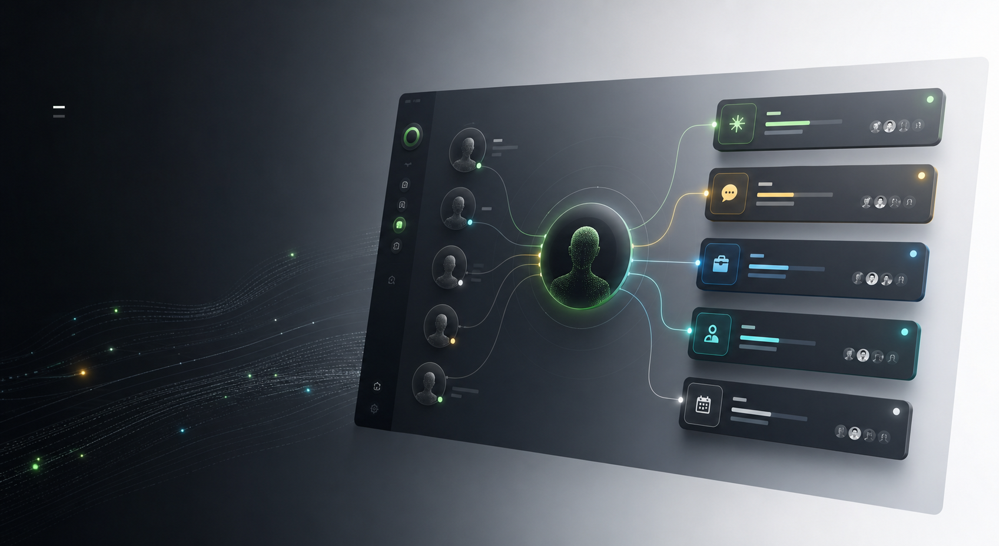

Choose intent
Visitors start with the reason they want to reach you: collaborate, hire, ask, intro, or schedule.

Personal agent social inbox
hmu.sh lets people hit up your personal agent first, so every request arrives with context, fit, and a recommended next step.
The idea
hmu.sh replaces vague DMs, static contact forms, and open calendar links with a public AI intake layer. Visitors choose why they are reaching out, your agent asks for the missing context, and you receive a concise intent card instead of another noisy thread.
How it works
Visitors start with the reason they want to reach you: collaborate, hire, ask, intro, or schedule.
Your personal agent asks a few focused questions and collects the context you would have asked for anyway.
You get the summary, fit signal, links, and recommended next action without digging through a messy thread.
Accept, decline, reply, ask for more context, schedule, or make an intro from one quiet inbox.
Intent card
Every request is normalized into a decision-ready card. Your inbox becomes a queue of possible next steps, not a stream of interruptions.
Maya is building an AI founder community and wants to test hmu.sh profiles with ten active builders next week.
Use cases
Filter collaboration, feedback, open-source, and demo requests through one public agent link.
Separate investors, candidates, customers, partners, and advice requests before they hit your calendar.
Turn sponsorship, guest, community, and intro requests into structured cards with clear next steps.
Ask founders for the context you need before a first call, then route the strongest fits quickly.
Roadmap